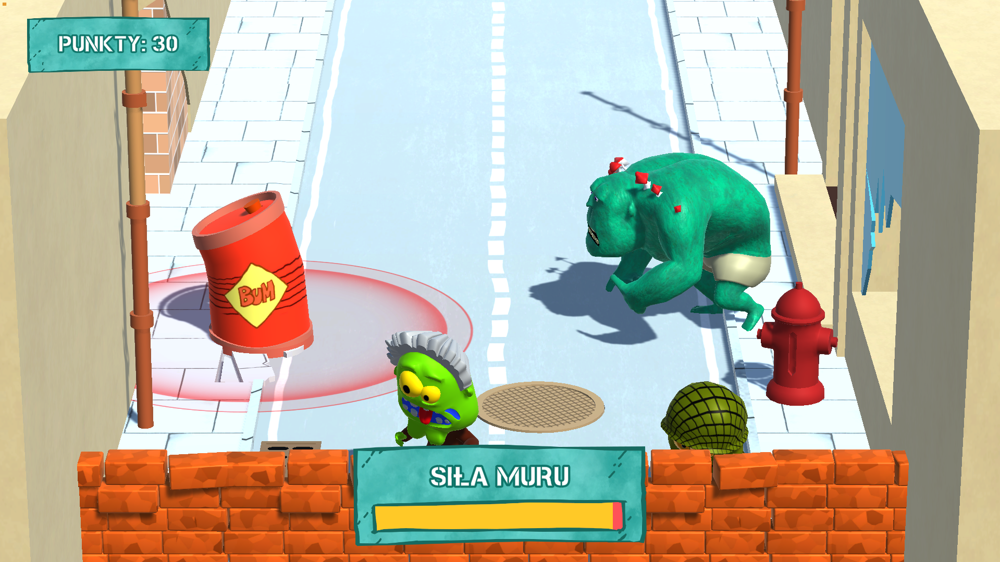
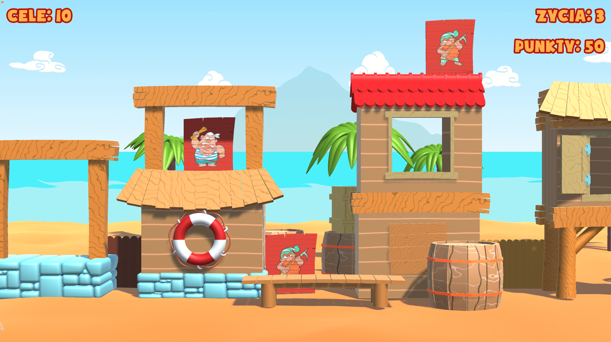
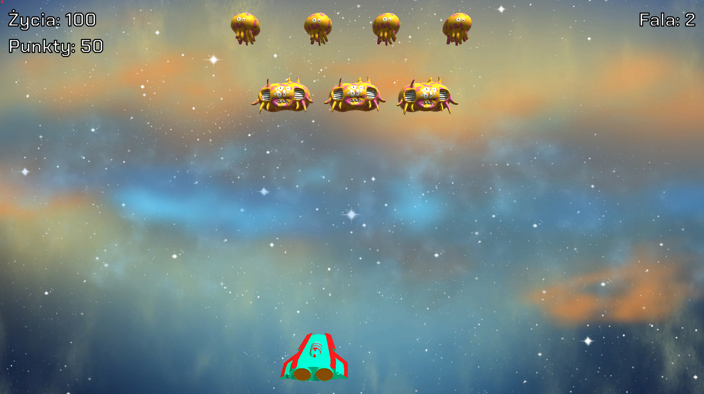
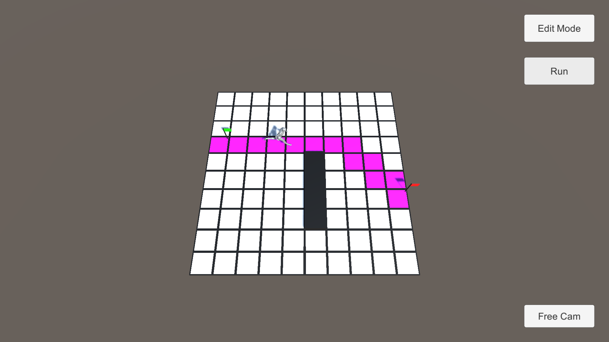

My story
My journey started at Aberystwyth University where I graduated Computer Graphics, Vision and Games BSc course.
I decided to do Advanced Computer Science MSc course too, which I successfully finished, to get more in-depth knowledge about computer science.
As I had always been passionate about games, becoming a game developer was a natural choice.
During my career I have shipped many titles, e.g. small interactive games for squash courts, but also AA game available on Steam. I worked on VR projects, PC and mobile.
I find myself working both as a team and on my own. I enjoy planning development of games, solving difficult problems and implementing interesting solutions.
Currently I have over 3 years of experience working in Unity.
I am also a pianist. I have been playing piano since I was 6 years old. My experience with music allow me to compose sounds and melodies that I can later use in games that I work on.
Below you can find example projects that I worked on
(I cannot show all of them because of copyrights and NDAs):
INTERACTIVE SPORT:
Zombie

Wave defense interactive game. The game is supposed to be played at squash courts. Players throw squash balls to defend the wall from enemies. Each zombie has
different statistics. There are also bosses that are very hard to destroy. The game gets progressively harder.
INTERACTIVE SPORT:
Pirates

Interactive shooting range game. The game is supposed to be played at squash courts. Players throw squash balls to destroy target as fast as possible.
The faster players destroy the target, the more points they can get. If they fail to destroy target within given time, the target will shoot. Players also need
to be careful to not hit green targets.
INTERACTIVE SPORT:
Aliens

Interactive space invaders. The game is supposed to be played at squash courts. Players throw squash balls to destroy enemy spaceships. Enemies can shoot
so it is very important to destroy them as quickly as possible.

VR port of PC game. As the only developer my responsibility was to recreate first 3 levels of the game in VR to release the game in Early Access.
Back when the game was released in Early Access
on March 2023 it received over 70% positive reviews. I have not worked on it since then because my
contract was over and apparently the company decided to leave the project behind.
PERSONAL PROJECTS:
A* PATHFINDING

Side project, testing A* pathfinding for character movement in game and trying different approaches
PERSONAL PROJECTS:
CO-OP GAME

In progress...